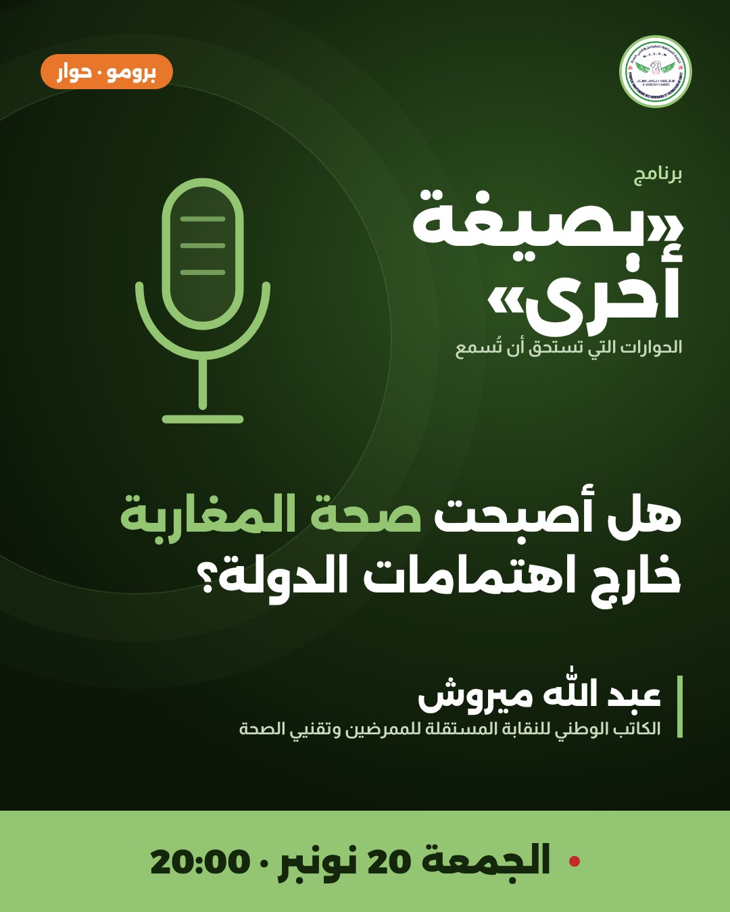

فيديو | الحلقة كاملة: عبد الله ميروش في «بصيغة أخرى»: هل أصبحت صحة المغاربة خارج اهتمامات الدولة؟

استضاف برنامج «بصيغة أخرى» الأخ عبد الله ميروش، الكاتب الوطني للنقابة المستقلة للممرضين وتقنيي الصحة، في حلقة كاملة خُصصت لسؤال: هل أصبحت صحة المغاربة خارج اهتمامات الدولة؟
وتأتي هذه الحلقة في سياق تتعثر فيه مخرجات الحوار الاجتماعي، ويتواصل فيه النقاش حول مركزية المناصب المالية والأجور، وحول مصنف الأعمال الذي تطالب به النقابة حمايةً للممارسة المهنية للممرضين وتقنيي الصحة.
الحلقة كاملة متاحة الآن على يوتيوب.
«بصيغة أخرى» – الحوارات التي تستحق أن تُسمع 🎙️
فتح في تطبيق النقابة